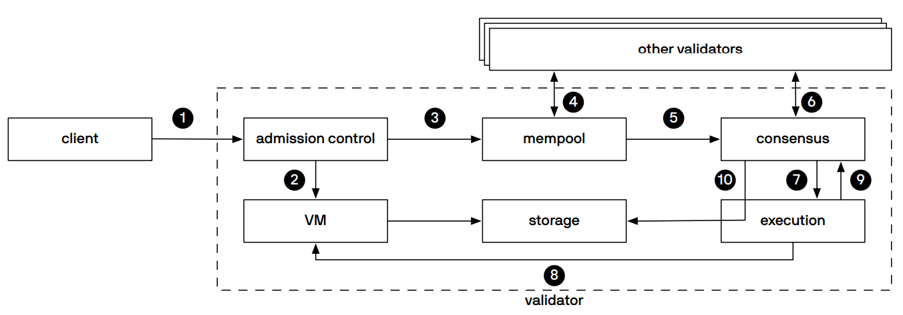
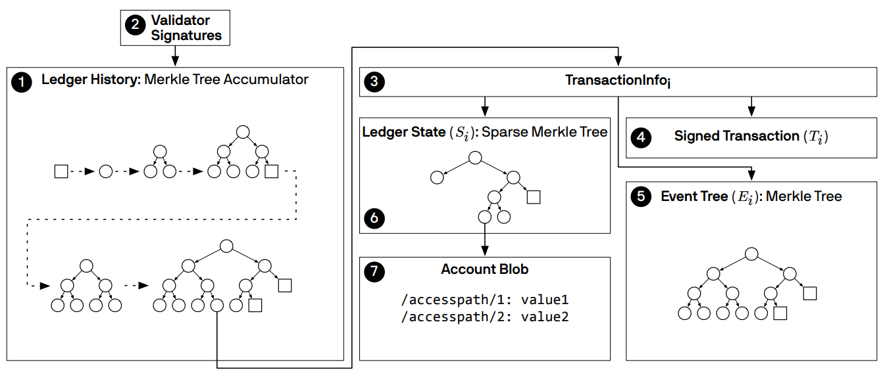
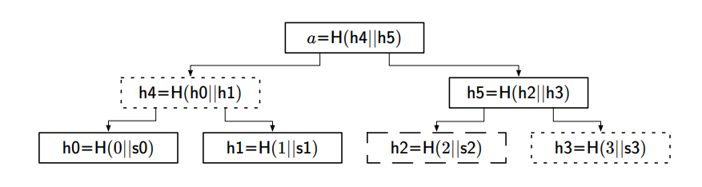

A Brief Analysis of the Blockchain Technology Behind Libra
Recently, national leaders have publicly encouraged the research of blockchain technology, stating that blockchain should be used as a breakthrough for independent innovation of core technologies. The issuance plan of Libra is an important milestone in the history of blockchain development. This article briefly introduces Libra’s technical solutions from aspects such as contract language, database protocol, logical data model, data structure, and consensus protocol.
In May 2019, Facebook first confirmed its intention to launch a cryptocurrency, and news of the “global coin” and “Facebook coin” spread rapidly. On June 18, Facebook officially announced that it would launch a cryptocurrency called Libra, with a targeted release in the first half of 2020. Facebook claims that Libra is built on a secure, reliable, and scalable blockchain, adopts an off-chain asset collateral model, is anchored to a basket of fiat currencies as asset collateral, and is governed by the independent Libra Association. With 2.7 billion users worldwide, Libra’s vision is to create a simple, borderless currency that provides financial services to billions of people.
After Facebook officially announced Libra, it simultaneously launched Libra’s official website, white paper, and test network. The white paper mentioned that the Libra network hopes to operate as a public chain in the future, but due to the lack of mature technology to support large-scale transactions on public chains, Libra will start as a consortium chain, with plans to transition from a consortium chain to a public chain in three to five years.
The Libra official website published three papers detailing the technical solutions used by Libra: “The Libra Blockchain,” “Move: A Language with Programmable Resources,” and “State Machine Replication in the Libra Blockchain.” To meet the requirements of high security, sufficient flexibility, and high throughput, Libra designed a new programming language, Move, chose the BFT consensus mechanism, and adopted the widely used Merkle Tree as the data structure. This article briefly introduces the relevant technologies of the Libra blockchain.
Move
When real-world assets enter the Libra reserve, the system creates corresponding digital assets in Libra currency. These digital assets circulate between different accounts, and when real-world assets leave the Libra reserve, the corresponding digital assets are destroyed. Facebook designed a new programming language, Move, for managing digital assets in Libra, representing digital assets as resources in Move.
Move is a typed bytecode language, with resources being one of the types. Programs are first checked by a bytecode verifier before being executed by an interpreter. In Move, resources only support two operations: copy and move. Copying means moving out the resource, and moving means moving in the resource. Unlike ordinary variable types, resources can be assigned to ordinary variables, but resources themselves can only be moved between addresses and cannot be copied or discarded. If the program violates these rules, such as copying once and moving twice, it will not pass the bytecode verifier because the resource is no longer accessible after the first move.
Using Move, custom transaction logic and smart contracts can be written, which are more powerful than existing contract languages. Bitcoin Script provides a simple and elegant design for expressing strategies to spend bitcoins but does not support custom data types and programs and is not Turing complete. The Ethereum Virtual Machine supports control flow and custom data structures, but the excessive freedom of contracts leads to more vulnerabilities, resulting in many security incidents. Move’s static type system ensures the security of digital assets.
To facilitate verification by static analysis tools, Move takes several design measures: no dynamic dispatch, making it easier for verification tools to analyze programs; limited mutability, requiring references for each value change, with temporary variables created and destroyed within a single script, and the bytecode verifier using a “borrow checking” mechanism similar to Rust to ensure that a variable has only one mutable reference at a time; modularity, allowing verification tools to verify programs at the module level without needing to care about implementation details. These features make static verification tools more efficient and reliable.
public main(payee: address, amount: u64) {
let coin: 0x0.Currency.Coin = 0x0.Currency.withdraw_from_sender(copy(amount));
0x0.Currency.deposit(copy(payee), move(coin));
}
This is an example program of a transaction script, an intermediate representation (IR) of the Move language, which is more readable and writable for programmers. The program implements a function to transfer resources. The main method is the entry point of the script, containing two parameters: the target address and the amount. The program first withdraws the amount of resources from the 0x0 address Currency module and temporarily stores it in the coin variable, then moves the coin resources to the payee’s address.
Transaction scripts provide flexibility in one aspect of Move, while modular design ensures the diversity of script programs. The module type is module, mainly containing Move programs. A module can include any number of resources, that is, declare one or more resource-type variables. Modules/resources/procedures are equivalent to classes/objects/methods in object-oriented languages, except there is no concept of self or this in Move.
Libra Protocol
The Libra blockchain is a distributed database that needs cryptographic authentication to store programmable resources, such as Libra currency, represented as resources in Move. The Libra protocol has two types of entities: validators that collectively maintain the database and clients that typically initiate requests to the database. During execution, the Libra protocol elects a leader to receive client requests, synchronizes the requests to other validators for execution, and then returns the results to the leader, who then returns the final result to the client.
Libra transactions go through many steps, including signature verification, running pre-execution programs, verifying transaction scripts and module programs, publishing modules, executing transaction scripts, running post-execution programs, etc. To measure the computational power of contract transactions, Libra adopts the Gas concept from Ethereum, consuming Gas as transaction fees.
This diagram shows the detailed flow of transaction requests within the Libra network components. The client initiates a request to the permission control layer. After permission verification, the request data is passed to the virtual machine for preprocessing, and the data also enters the memory pool, responsible for synchronizing the request to other nodes. The consensus protocol plays a role during request synchronization. After node synchronization, the virtual machine executes the actual transaction program, the program execution is completed, and the result is persisted, completing the basic process.
Logical Data Model
All data on the Libra blockchain is stored in a database identified by version numbers, which are 64-bit unsigned integers. Each version of the database contains a tuple (T, O, S), where T represents the transaction, O represents the transaction output, and S represents the ledger state. When we say an Apply operation is executed, it is represented as Apply(S, T) -> (O, S), meaning that the T transaction is executed in the S state, producing O output and changing the ledger state to S.
Accounts are owners of resources and can use the resources in their accounts for transactions. An account address is a 256-bit value. Creating a new account requires a verification/signature key pair (vk, sk). The new account address a is computed by public key encryption of vk, a = H(vk). Specifically, Libra uses the SHA3-256 hash function and the EdDSA public key of the Ed25519 elliptic curve for digital signatures. During transactions, an existing account can generate a new account by invoking the create_account(a) command.

The diagram shows four account addresses prefixed with 0x. Rectangles represent modules, ellipses represent resources, and arrows represent dependencies. The Currency.T in the 0x12 account is declared in the Currency module, and the Currency module code is stored at address 0x56. Similarly, the StatChannel.T of 0x34 is declared in the StateChannel module at address 0x78. When a client wants to access the Currency.T under 0x12, the request resource path should be written as 0x12/resources/0x56.Currency.T.
Data Structure
Libra transaction blocks contain data signed by nodes, and the signature data is verified before the transaction. The collective signature allows clients to trust that the requested database version is complete and valid, enabling clients to query any node or third-party database replica. The data structure in the Libra protocol is primarily based on Merkle trees.
As shown, the root hash of ledger historical data verifies the system’s complete state, with ledger data accumulated by a Merkle tree, represented by dashed lines. Each node in the ledger’s historical data contains transaction signatures, event trees, and ledger states. The event tree is also based on Merkle trees, while the ledger state is based on sparse Merkle trees, with each leaf node containing account data.
In the Libra protocol, validator nodes V verify the root hash a of data D. For example, when an untrusted node obtains data D and uses function f to compute the result r, it also needs data π to verify the result’s correctness. The protocol requires the node to transmit (a, f, r, π) to the validator V for verification. If f(D) = r, the result is verified.
In the diagram, data D = {0:s0, 1:s1, 2:s2, 3:s3}. Suppose f is a